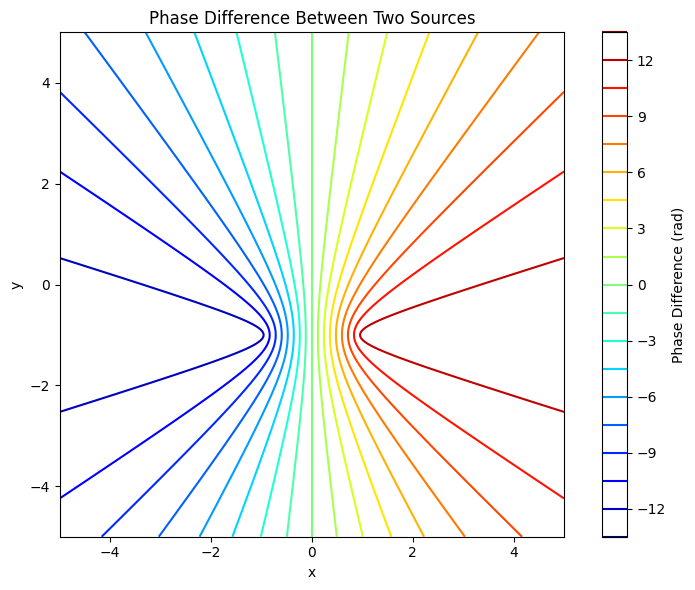

Problem 1
Interference of Circular Waves from Square-Arranged Point Sources
A Theoretical and Computational Study in 2D Water Wave Superposition
1. Introduction
Wave interference lies at the heart of wave physics. It refers to the phenomenon where two or more wavefronts overlap and combine to form a new wave pattern. On a water surface, circular waves from multiple point sources can interact in visually striking ways—forming alternating patterns of constructive and destructive interference.
This document investigates the superposition of water waves emitted from four identical, coherent sources arranged in a square configuration. Using the wave equation in cylindrical coordinates and Python-based simulation, we model, visualize, and analyze the resulting interference pattern.
2. Theoretical Background
2.1 Wave from a Single Point Source
The displacement \( \eta \) of a water surface at time \( t \) and position \( (x, y) \), due to a wave originating from a point source at \( (x_0, y_0) \), is given by:
Where:
- \( A \): amplitude of the wave,
- \( r = \sqrt{(x - x_0)^2 + (y - y_0)^2} \): radial distance to source,
- \( k = \frac{2\pi}{\lambda} \): wave number (with \( \lambda \) wavelength),
- \( \omega = 2\pi f \): angular frequency (with \( f \) frequency),
- \( \phi \): phase constant,
- \( t \): time.
Note: The \( \frac{A}{r} \) term models radial energy dispersion on a 2D surface. This simulates the realistic drop in amplitude with distance.
2.2 Superposition of Multiple Sources
If there are \( N \) identical sources located at positions \( (x_i, y_i) \), the total displacement is:
Where each \( r_i = \sqrt{(x - x_i)^2 + (y - y_i)^2} \) is the distance from point \( (x, y) \) to source \( i \).
The interference pattern is determined by the phase differences between these cosine terms:
- Constructive interference: \( kr_i - kr_j = 2\pi n \)
- Destructive interference: \( kr_i - kr_j = (2n+1)\pi \)
for integer \( n \).
2.3 Phase Matching & Interference Zones
For two waves:
The total displacement:
Using the trigonometric identity:
We obtain an interference envelope:
Which reveals oscillating interference fringes governed by the path difference \( r_1 - r_2 \).
3. Geometry of the Setup
We use a square of side length \( L = 2 \), centered at the origin. The sources are located at:
- \( S_1 = (-1, -1) \)
- \( S_2 = (-1, +1) \)
- \( S_3 = (+1, -1) \)
- \( S_4 = (+1, +1) \)
These sources are:
- Coherent (same frequency),
- In-phase (same \( \phi = 0 \)),
- Identical in amplitude and wavelength.
4. Python Simulation Code
import numpy as np
import matplotlib.pyplot as plt
# --- Parameters ---
A = 1.0
wavelength = 1.0
frequency = 1.0
phi = 0
k = 2 * np.pi / wavelength
omega = 2 * np.pi * frequency
t = 0
# --- Grid ---
x = np.linspace(-5, 5, 500)
y = np.linspace(-5, 5, 500)
X, Y = np.meshgrid(x, y)
# --- Source Positions (Square) ---
L = 2.0
sources = [(-1, -1), (-1, 1), (1, -1), (1, 1)]
# --- Superposition of Waves ---
eta_total = np.zeros_like(X)
for (x0, y0) in sources:
R = np.sqrt((X - x0)**2 + (Y - y0)**2) + 1e-6 # Avoid singularity at R=0
eta = (A / R) * np.cos(k * R - omega * t + phi)
eta_total += eta
# --- Plot ---
plt.figure(figsize=(10, 8))
plt.pcolormesh(X, Y, eta_total, shading='auto', cmap='seismic')
plt.colorbar(label='Surface Displacement η')
plt.title("Interference of 4 Point Sources (Square)")
plt.xlabel("x position")
plt.ylabel("y position")
plt.axis('equal')
plt.tight_layout()
plt.show()
5. Analysis of Results
Constructive Interference
Occurs when the path difference from any two sources is an integer multiple of \( \lambda \):
Produces bright fringes in the plot.
Destructive Interference
Occurs when:
These appear as dark regions.
Symmetry
- The interference pattern exhibits 4-fold rotational symmetry due to the square geometry.
- Patterns are stationary since all sources oscillate in phase.
6. Experimental Extensions
Time Evolution
To animate the pattern over time, iterate over t:
for t in np.linspace(0, 2*np.pi, 100):
...
Other Polygons
- Equilateral triangle: Use 3 points at \( 120^\circ \) intervals.
- Pentagon: Use polar coordinates:
N = 5
R = 2
sources = [(R * np.cos(2*np.pi*i/N), R * np.sin(2*np.pi*i/N)) for i in range(N)]
Arbitrary Phases
Vary \( \phi \) per source to simulate phase delays or non-coherent waves.
7. Generalization
The method above can be generalized to any N sources located at arbitrary positions \( (x_i, y_i) \), possibly with varying phase offsets \( \phi_i \):
This enables modeling of more complex systems, including:
- Laser interference,
- Sound field simulations,
- Quantum wavefunction interference.
8. Suggested Folder Structure
wave_simulation_square/
├── interference_square.md
├── simulation_square.py
├── images/
│ └── pattern_snapshot.png
├── animation/
│ └── gif_frames/
└── README.md
9. Conclusion
In this study, we investigated the interference of circular water waves emitted from four coherent sources positioned at the vertices of a square. By employing the principle of superposition, we derived and simulated the resulting surface displacement:
where each \( r_i \) is the distance from the \(i^{th}\) source to the point \( (x, y) \), and all sources share common amplitude \( A \), wave number \( k \), frequency \( \omega \), and coherent phase differences.
Key Findings:
- The interference pattern exhibits high symmetry, due to the square configuration.
- Constructive interference appears when the path differences between sources align to integer multiples of the wavelength \( \lambda \).
- Destructive interference results from phase differences of odd multiples of \( \pi \), forming nodal lines (regions of cancellation).
- The amplitude decays with distance \( \left(\propto \frac{1}{r}\right) \), modeling physical energy dissipation in water.
- The overall displacement field is spatially complex but temporally periodic, governed by the cosine term involving time \( t \).
Physical Implications:
This simulation reinforces key wave physics concepts such as:
- The superposition principle in linear systems,
- The effects of phase coherence and source arrangement,
- The formation of nodal and antinodal lines,
- Realistic amplitude decay over space.
Potential Extensions:
- Varying the number of sources or changing the polygon (triangle, pentagon, etc.)
- Introducing initial phase differences between emitters
- Adding obstacles or barriers to study reflection and diffraction
- Extending the model to simulate optical, acoustic, or quantum interference phenomena
Ultimately, this project demonstrates the effectiveness of combining analytical wave modeling with computational visualization to explore fundamental physical behaviors in wave systems.
